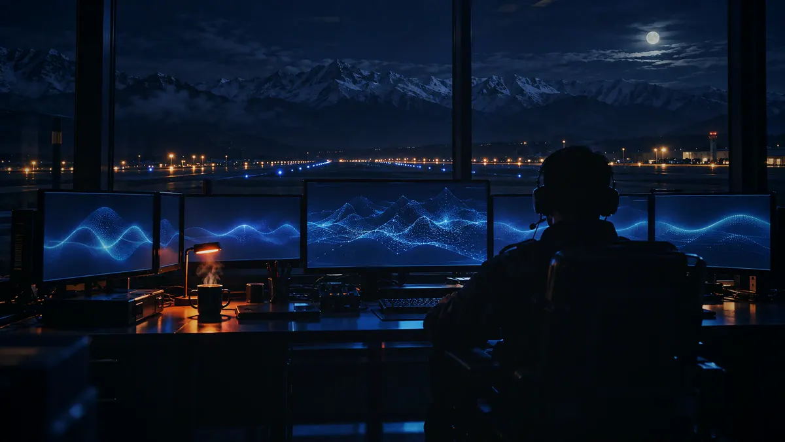
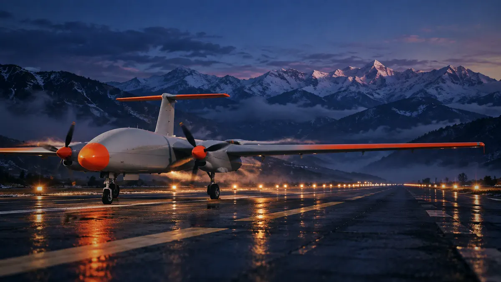

52fault types in the simulation library
10mission profiles, hot to high altitude
17CAN message IDs encoded and decoded
2 hmission replay with its healthy twin
On the aircraft · designed
Decides on board. Keeps deciding offline.
CAN telemetry flows through ETPR into one CanonicalTelemetryState. The Edge AI chain, from a physics-informed twin to a safety layer, keeps judging the engine even when the downlink drops.
How it works →
On the ground · designed
A case, not an alarm.
GCS AI builds the engineering case: divergence from the baseline, candidate causes, evidence, prognosis and a proposed action. A human engineer keeps final authority.
Fault response →One hour in, the exhaust runs warm.
A simulated turbocharger compressor wears during a two-hour mission. Exhaust gas pulls away from the healthy twin by up to +10.6 °C.
Simulated · TAPAS V4 run, wear 50 %. Dashed: healthy twin. Watch and flag bands are illustrative.

See the fault before it grounds the aircraft.
Open the replayAbout this direction · The category standard
- World: what the best UAV and aviation companies ship today (Skydio, Heart Aerospace, Joby): full-bleed footage, huge grotesk headline, stat row, alternating image and text, one blue.
- Colours: white, ink, mist grey, one confident blue. Glass: the navigation bar only.
- Type: Geist and Geist Mono. Motion: slow hero settle, fade-up reveals, image zoom on hover.
- Strength: instantly credible. Risk: it looks like everyone else in the category, by design.